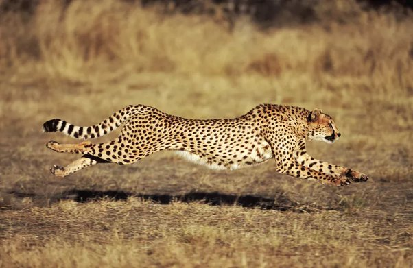
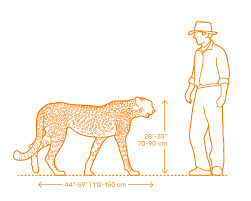
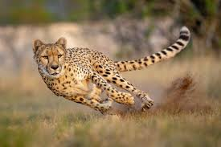
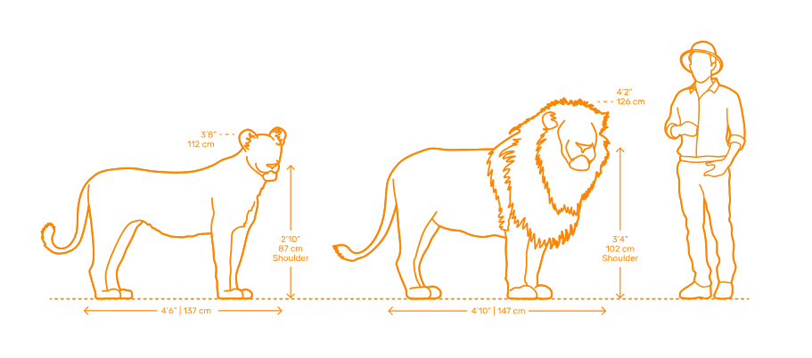
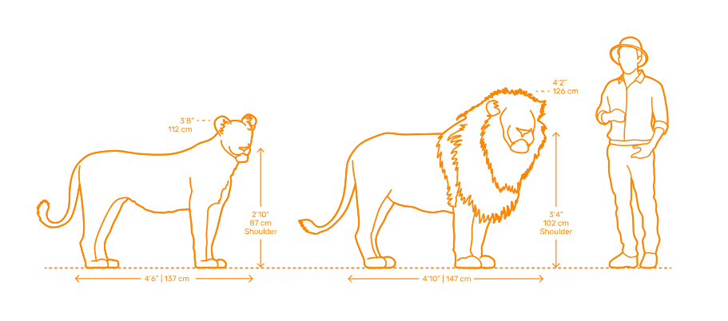
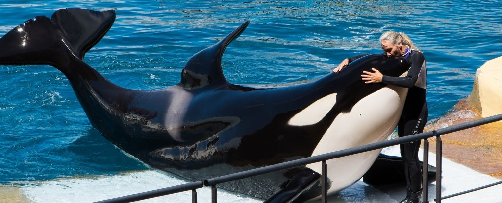
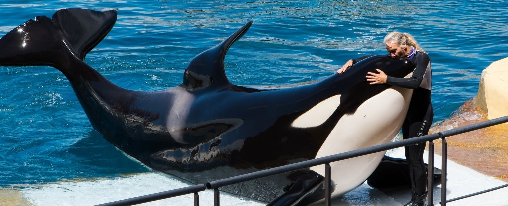
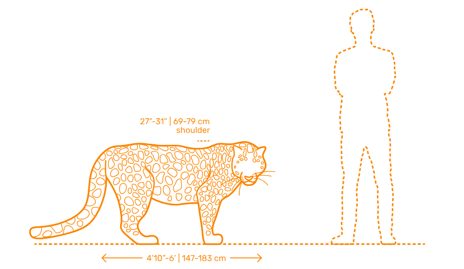
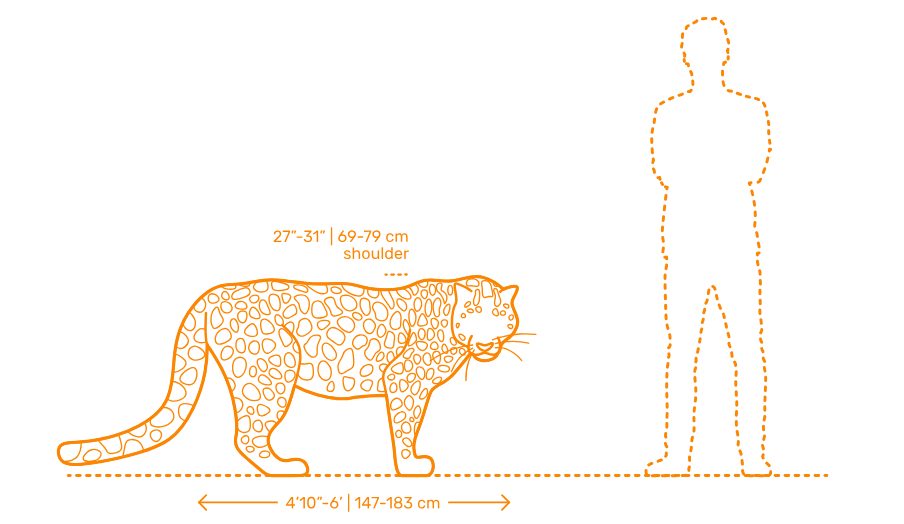

Apex Predators et Strategies
Cheetah: Speed sprints
The cheetah is the fastest land animal. Its entire body is built for short bursts of extreme speed rather than power compared to the rest.
  stats:
the cheetah wins by finishing the hunt quickly.
if the prey survives the first chase, the cheetah usually loses.
a sprint last around 20-30 seconds, after that the cheetah overheat and get tired.
cheetah can catch any animal, but its high failure rate is caused by her chase
being stolen by hyenas and lions groups.
here is a Vedio of cheetah hunting .
learn more about cheetah: link
Lion: teams and Power
Lions dominate through group and stratigies called lions prrides. while individually slower, a pride compensates through teamwork.
 

stats:
Cooperation reduces individual energy cost
and increases success rate and survival.
here is a Vedio of lions hunting .
learn more about lions: link
Orca: Intelligence & Planning
 

Orcas are the most intelligent predators on Earth.
They adapt their hunting strategies depending on prey and environment.
they live in groups called pods.
they learn hunting strategies and practice when young.
some pods hunt great white shark and eat only the liver.
here is a Vedio of orca hunting .
learn more about Orcas: link
stats:
Orcas dominate but through planning and learning and power.
Jaguar: Ambush et Bite Force
 

Jaguars rely on stealth and an extremely powerful bite equivilant to 1500psi.
They often kill prey with a single skull-piercing bite.
they hunt in land and water often killing crocodiles.
here is a Vedio of Jaguar hunting .
learn more about Jaguars: link